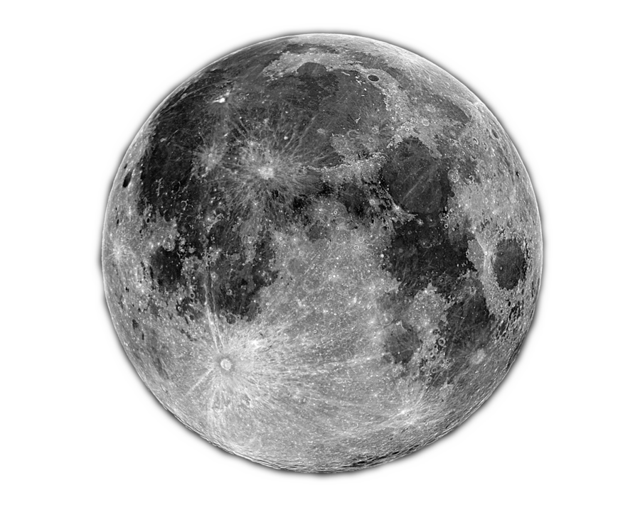

Si dice satellite naturale, o talvolta più impropriamente luna con l'iniziale in minuscolo, un qualunque corpo celeste che orbita attorno a un corpo diverso da una stella, come ad esempio un pianeta, un pianeta nano o un asteroide. Nel sistema solare si conoscono oltre centocinquanta satelliti naturali: si presume che ne esistano anche attorno ai pianeti di altre stelle. Tipicamente i giganti gassosi possiedono estesi sistemi di satelliti, mentre i pianeti terrestri ne hanno pochi: nel sistema solare Mercurio e Venere non ne sono dotati, la Terra ne possiede uno molto grande rapportato alle proprie dimensioni (Luna) mentre Marte ne possiede due piccoli (Fobos e Deimos). Fra i pianeti nani i satelliti sembrano essere una caratteristica predominante degli oggetti transnettuniani, come Plutone (cinque, di cui uno massiccio), Haumea (due satelliti) ed Eris (un satellite). Per estensione si indica col termine di satellite naturale qualunque oggetto di origine non artificiale che orbiti intorno a un oggetto di massa più grande, ad esempio una galassia nana che orbita attorno a una galassia di dimensioni maggiori si chiama galassia satellite.
La Luna è un satellite naturale, l'unico della Terra. Il suo nome proprio viene talvolta utilizzato, per antonomasia e con l'iniziale minuscola («una luna»), come sinonimo di satellite anche per i corpi celesti che orbitano attorno ad altri pianeti.  Orbita a una distanza media di circa 384 400 km dalla Terra, sufficientemente vicina da essere osservabile a occhio nudo, il che rende possibile distinguerne alcuni rilievi sulla superficie. Essendo in rotazione sincrona rivolge sempre la stessa faccia verso la Terra e il suo lato nascosto è rimasto sconosciuto fino al periodo delle esplorazioni spaziali. Durante il suo moto orbitale, il diverso aspetto causato dall'orientazione rispetto al Sole genera delle fasi chiaramente visibili e che hanno influenzato il comportamento dell'uomo fin dall'antichità. Impersonata dai greci nella dea Selene, fu da tempo remoto considerata influente sui raccolti, le carestie e la fertilità. Condiziona la vita sulla Terra di molte specie viventi, regolandone il ciclo riproduttivo e i periodi di caccia; agisce sulle maree e la stabilità dell'asse di rotazione terrestre. Si pensa che la Luna si sia formata 4,5 miliardi di anni fa, non molto tempo dopo la nascita della Terra. Esistono diverse teorie riguardo alla sua formazione; la più accreditata è che si sia formata dall'aggregazione dei detriti rimasti in orbita dopo la collisione tra la Terra e un oggetto delle dimensioni di Marte chiamato Theia. Il suo simbolo astronomico ☾ è una rappresentazione stilizzata della sua fase calante. La faccia visibile della Luna è caratterizzata dalla presenza di circa 300 000 crateri da impatto (contando quelli con un diametro di almeno 1 km). Il cratere lunare più grande è il bacino Polo Sud-Aitken, che ha un diametro di circa 2 500 km, è profondo 13 km e occupa la parte meridionale della faccia nascosta.
Con il termine satellite artificiale si possono intendere tutti gli oggetti orbitanti intorno ad un corpo celeste che sono stati posti volutamente nell'orbita desiderata con mezzi tecnologici (ad esempio razzi vettori) e con varie finalità a supporto di necessità umane. L'insieme di più satelliti artificiali adibiti ad uno stesso scopo forma una costellazione o flotta di satelliti artificiali.
I satelliti artificiali si possono suddividere in:
satelliti scientifici, destinati alla ricerca pura nel campo astronomico o della geofisica, es. Telescopio Spaziale Hubble o Lageos e satelliti applicativi, destinati a scopi militari o ad usi commerciali civili..'
];
foreach ($lista as $key => $value) {
print "$value ";
}
?>
I satelliti applicativi si possono ulteriormente suddividere in:
satelliti per telecomunicazioni, apparecchiature costruite per le telecomunicazioni, es. i Satelliti COSPAS-SARSAT; spesso sono posizionati in orbitw geostazionariw intorno alla Terra e in numero tale da formare una rete satellitare;',
'satelliti meteorologici, posizionati sia in orbita geostazionaria (es. METEOSAT) sia in orbita polare (es. satelliti NOAA);
',
'satelliti per telerilevamento, costruiti per il telerilevamento, la cartografia e osservazione sistematica della superficie terrestre (es. satelliti Landsat, QuickBird, Envisat, IKONOS o RapidEye);
',
'satelliti per la navigazione, come quelli della rete GPS (Global positioning system);
',
'satelliti militari sia a scopo offensivo che difensivo, es. la rete di satelliti di monitoraggio nucleare Vela o lo statunitense Geosat;
',
'stazioni orbitanti, es. Stazione Spaziale Internazionale, Skylab, Mir;
',
'sonde spaziali in modo improprio, perché in genere le sonde non orbitano attorno ad un altro corpo.
',
];
foreach ($lista as $key => $value) {
print "$value ";
}
?>
Inoltre sono caratterizzati in base alle orbite che percorrono. Le orbite principali sono:
orbita polare,',
'orbita equatoriale,
',
'orbita geostazionaria,
',
'orbita terrestre bassa,
',
'orbita terrestre media.
',
];
foreach ($lista as $key => $value) {
print "$value ";
}
?>
© Copyright "Astronomy", 2018